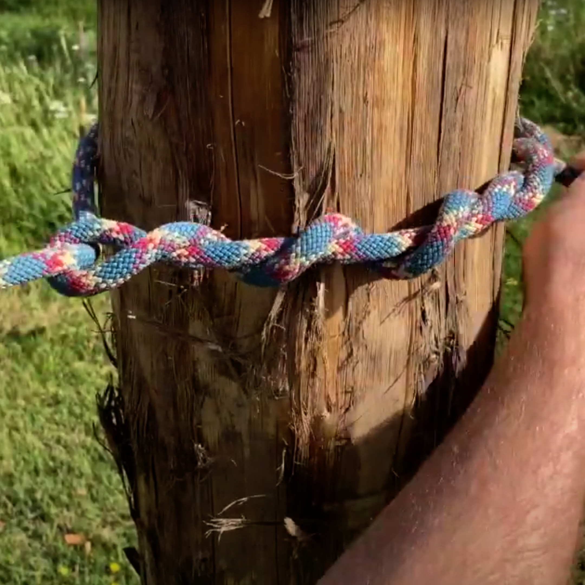
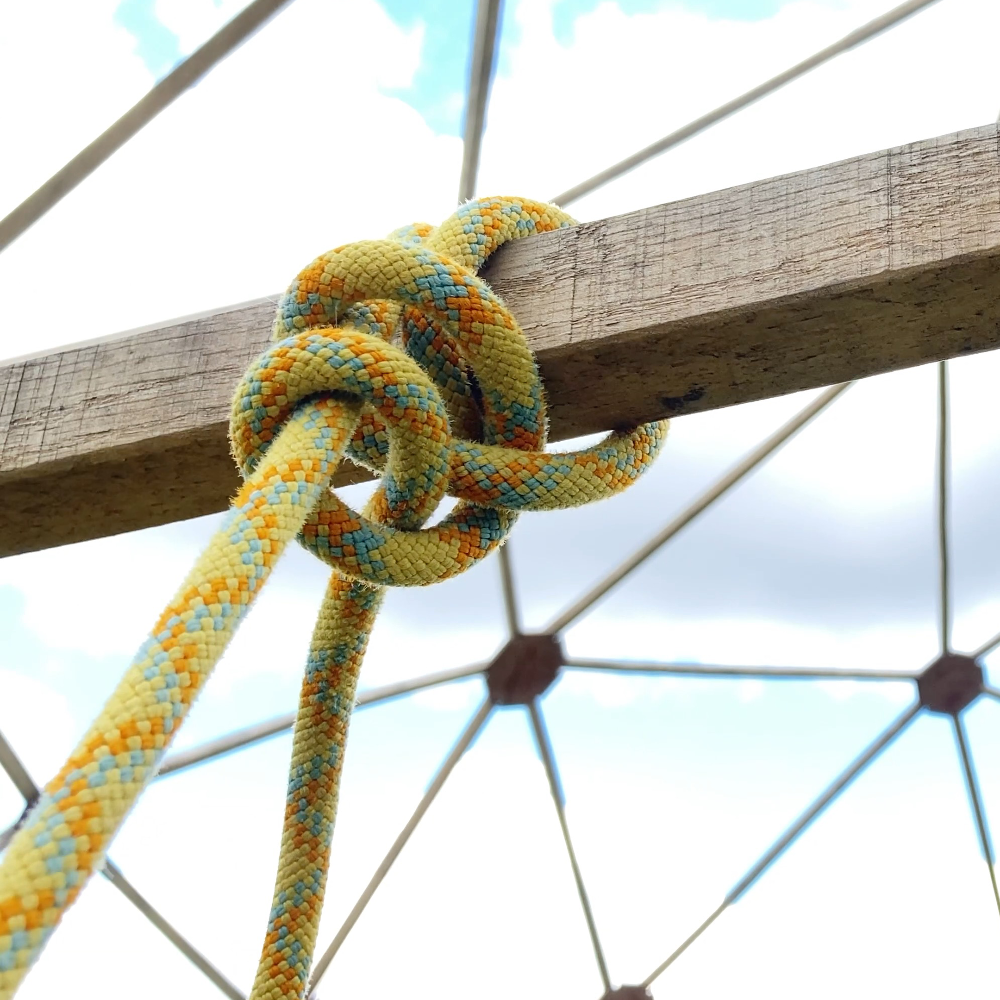

-

Edge of Space Explorer
The tarp tidy is great for tidying lengths of cord and guy
ropes, either attached or on their own.
-

Timber Hitch
The timber hitch can be used to attach a rope to an object.
Quick to tie and very easy to undo.
-

Clove Hitch
The clove hitch can be used to quickly attach a rope or cord to
an object, such as a mooring point.
-

Taut Tarp Hitch
The taut tarp hitch can be used to attach a rope or cord to an
object and create tension resulting in a taut line.
-

Figure Eight Knot
The figure eight knot can be used as a stopper knot to stop
rope slippage. Doubling back on the figure eight creates a
strong fixed loop.
-

Bowline Knot
The bowline knot can be used to make a fixed loop at the end of
a rope. It is easier to undo than a figure eight knot.
-

Reef Knot
The reef knot can be used to join two lengths of rope that are
the same material and thickness together.
-

Round Turn & Two Half Hitches
The round turn and two half hitches can be used to attach a
rope or cord to an object, such as a beam or a hook.
-

Sheet Bend
The sheet bend can be used to join two lengths of rope of
different material or thickness together. The double sheet bend
is more secure.
-

Square Lashing
A square lashing can be used to join two objects, such as
spars, poles and sticks, together. The join is usually
perpendicular.